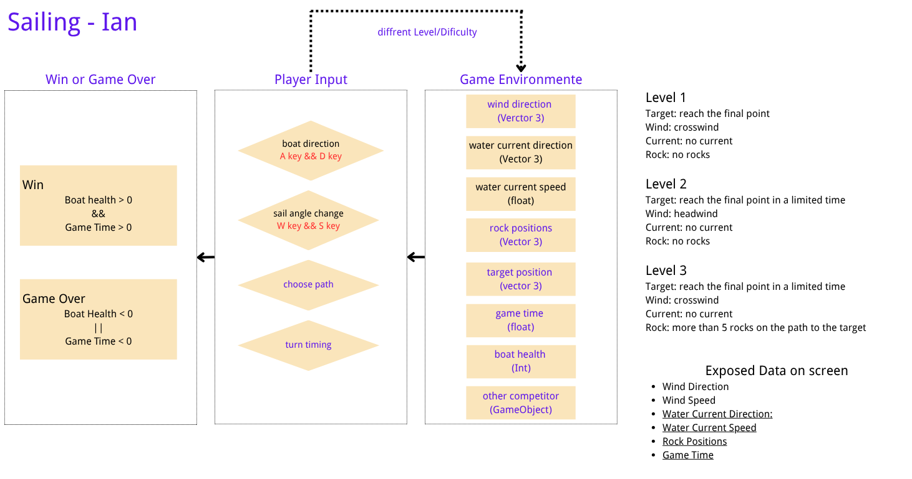

Steering the boat is not enough.
Sailer Game is a small browser game about the most counter-intuitive part of sailing: the boat does not go where you point it. It goes where the wind lets it go.
The game is built around a single learning shift:
Beginner: sailing means steering toward the target.
Expert: sailing means reading the wind, then choosing boat angle, sail angle, and route in relation to it.
Wind direction, boat heading, and sail angle all combine. Some directions are impossible — the boat stalls in the “no-go zone.” To make progress, you must tack: zigzag across the wind.
Play the Game →
What you control
A / D — turn the boat left / right
W / S — trim the sail in / out
R — restart the current level
N — next level (after winning)
What the game teaches
- The no-go zone — you cannot sail straight into the wind.
- Sail trim — the sail must catch the wind at a good angle.
- Tacking — to go upwind, zigzag.
- Route planning — choose a path, not a heading.
What's on screen
The right-hand panel always shows the data you need:
- Wind direction & strength
- Water current direction & speed
- Rock count & game time
- Boat health, heading, sail angle, speed
How to read this website
Domain & System — the real-world sailing context, the novice misconception, the system graph, and the three challenge presets.
Development Process — a chronological log of how the game and the website came together, including the AI’s role and Xiao’s decisions.
Play the Game — the playable build. Runs in the browser. No installation.